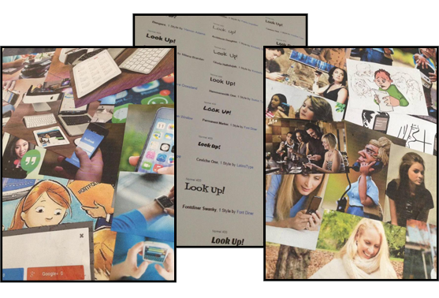
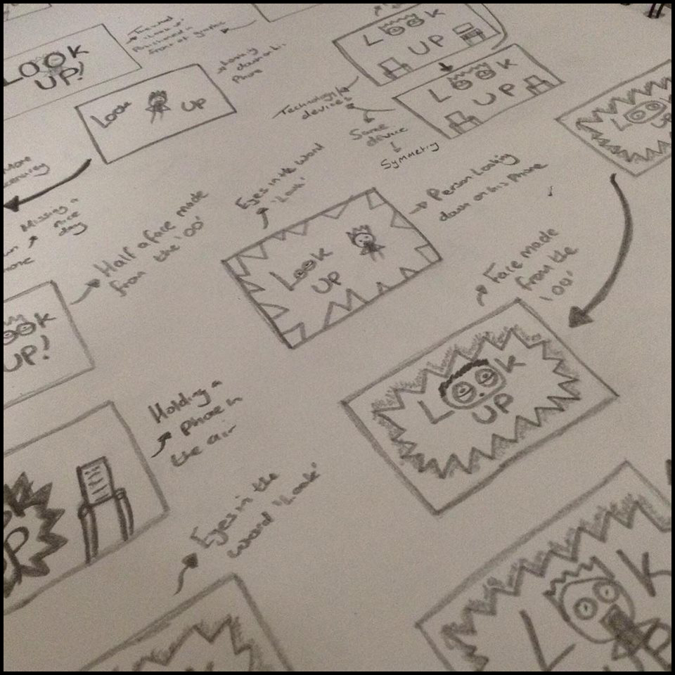
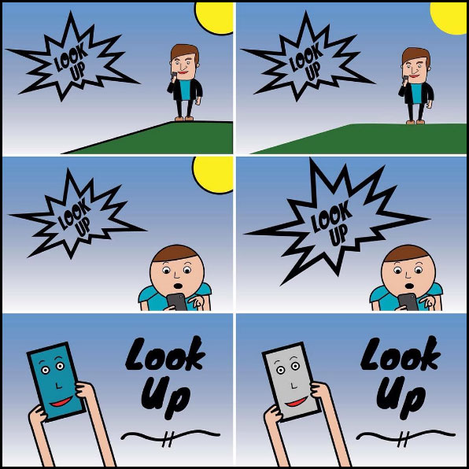
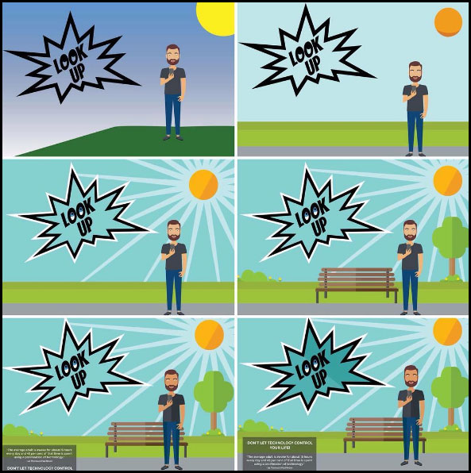
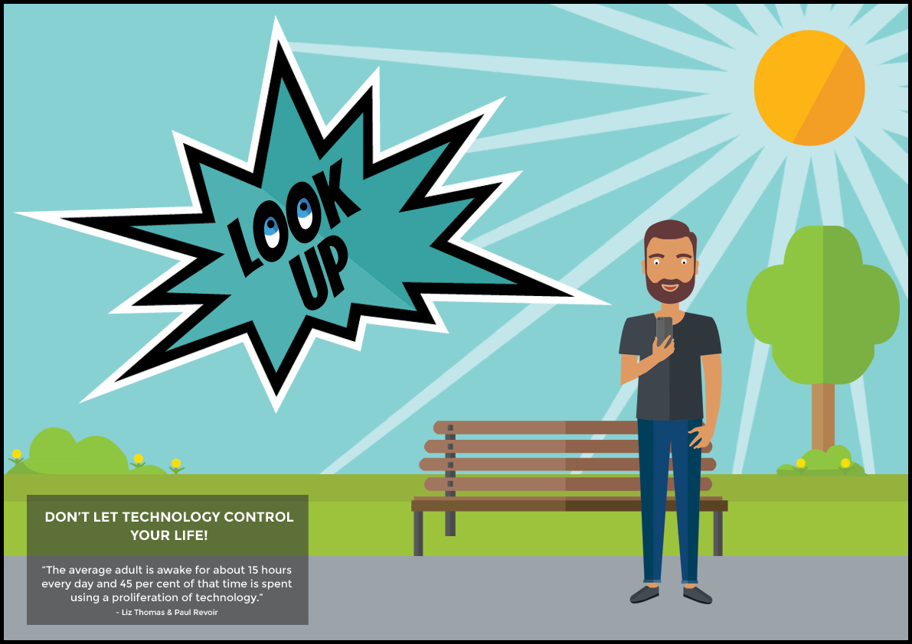
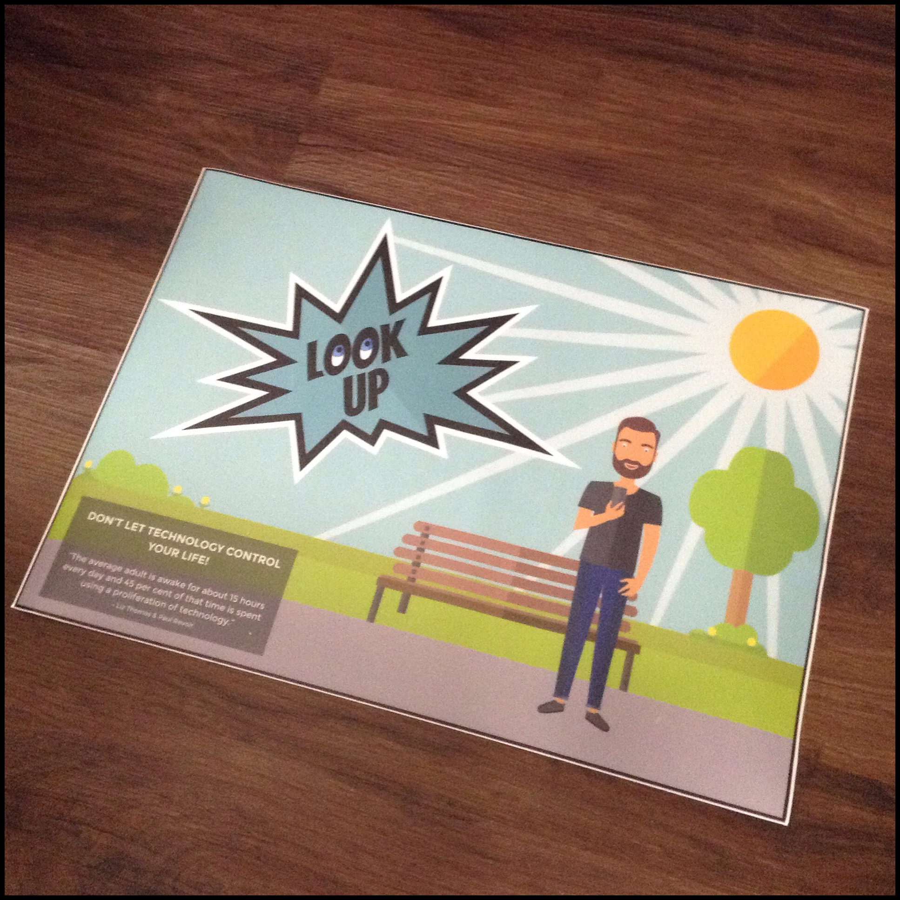

Project Completion Date: 21st April, 2016
As part of my Visual Design project at Huddersfield University, I created a print artefact on the topic of communication. This involved designing the artwork before getting it printed on the print medium of my choice which was a floor vinyl sticker.
For this project I will be designing and producing a print artefact that will be aimed at 16 to 21 year olds. I have targeted this audience because this age range uses technology more than most and in doing so looks down at social media and their devices more. This means that the design will have to stand out and catch their eye. The messages that is put on the artwork will need to make that age range think about how they communicate with others.
The print medium I have chosen to use is a floor vinyl sticker. I chose this because when you are looking down you can see the floor, which is where the sticker will be. This means that it will catch the eye of the person looking down and get them to think about how they are interacting and communicating with people.
Before jumping into the designing stage of the project I did some research. This involved creating moodboards based on my keywords which were taken from the brief and looking into existing floor vinyl stickers.
From my research into existing floor vinyl stickers, I found that they all stood out which draws people's attention to it. It also showed that both typography and graphic do work well together but keeping it simple and easy to read is the best approach.
To gain a better idea of what my final artwork could be I created three moodboards. The first one was about Communication, the second was about Technology and the third one showcased a variety of fonts.

The first and second moodboard are very similar in what they visually reprsent as they link together in the sense of we now communicate using technology.
The third moodboard showcased a variety of fonts that I found stood out and thought would be good to use in the final artwork. I decided to use the fonts Bangers and Montserrat as they had a unique style and stood out.
Overall I feel that the moodboards have helped in giving me a better idea of what I could create for my final artwork.
Before jumping into Photoshop and Illustrator I started by sketching out all my ideas. I sketched using pencil and paper which allowed me to get all my ideas down quickly.
I experimented with different graphics, styles and words that all relate to the issue of communication. From the mass of sketches, I produced I narrowed them down to the 6 best and refined them. From there I chose the best two to take into Photoshop and Illustrator.

I decided to develop design 4 and 5 because they are both and simple but also have some detail in them. Out of the 6 designs, I feel those two are the most impactful and eye-catching.
I made sketch 4 and 5 digital. I have created these sketches digitally using Adobe Photoshop and Illustrator. I am pleased with the outcome of these designs as they are visually appealing in terms of the bring and bold colours used.
Design 1 has four revisions and emphasises on the issue that we are looking down on our phones. The design incorporates 3 elements; the scenery, the cartoon character and the shouting speech bubble with the text inside. Out of the four versions, myself and my peers prefer version 3 because the cartoon character is a full person and the scenery looks much better than in the other designs.
Design 2 has two revisions. This design is more about the device which is emphasised by the face being inside the phone. Out of the two versions, I prefer the second version due to the colour of the phone being more suttle.

After reviewing these two designs and from the feedback I received I decided to take on design 1 (the second version of it). To improve the design I planned on using the technique of flat design and softer colours. This would help in modernising the design and in doing so making it more eye catching for the audience.
Using the feedback given by my peers at the critique review session I refined and improved my design. I improved on the existing elements and added new elements to the design. I also added gradients and a more detailed message to go with the bold text of 'Look Up'. Adding the detailed message was designed to make the issue I am trying convey more meaningful and powerful.
I actually didn't find refining the design that hard as I knew what needed to be done to make it more visually appealing. The hardest part was making it all come together as one design.

There was one element I planned to add but didn't include which was a path. The reason I didn't include it in the design was because it didn't look right. I think it's because the path didn't lead anywhere. However, I feel that the design doesn't need it.
From the first digital design I created to my final design I can personally see the vast improvements I have made on my design. I am really pleased with the outcome of the design and feel that it conveys the message of Look Up really well.


I am really happy with how the final design turned out as it uses the popular trend of Flat Design and I feel like the design is fit for purpose as it does convey the message of Look Up really well.
The hardest part of the project was creating the first digital designs as I'd never done anything like this before.
Overall, I have found this project a real learning curve as I have created something that I have never done before. i also feel that the issue is something relevant and the print medium of a floor vinyl sticker works really well with the topic.